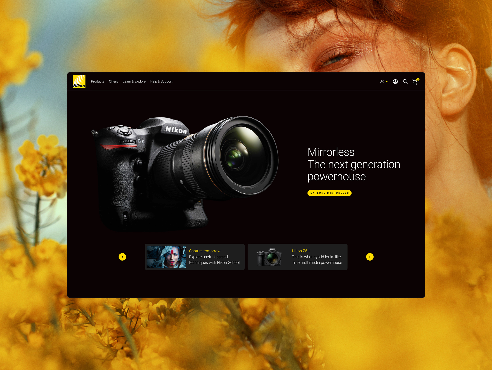
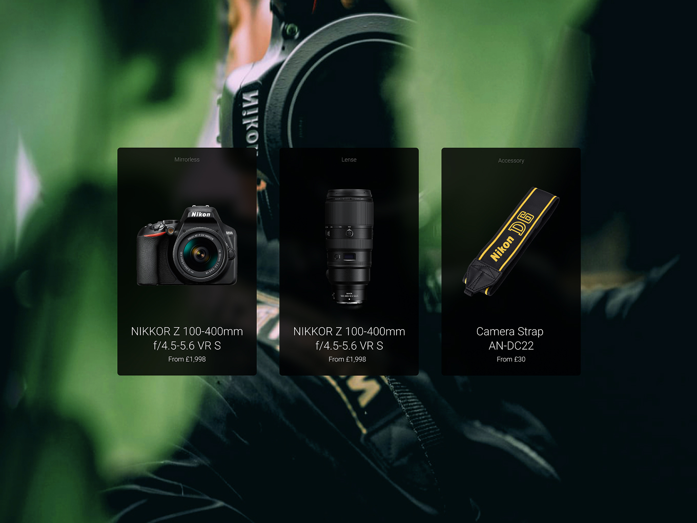
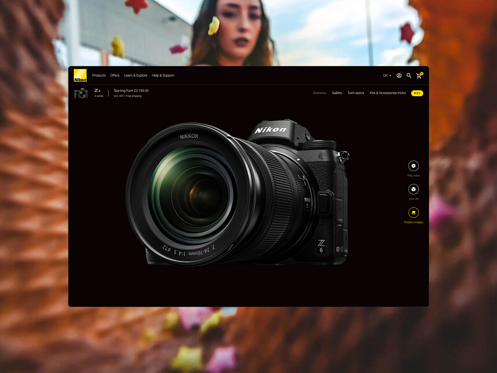
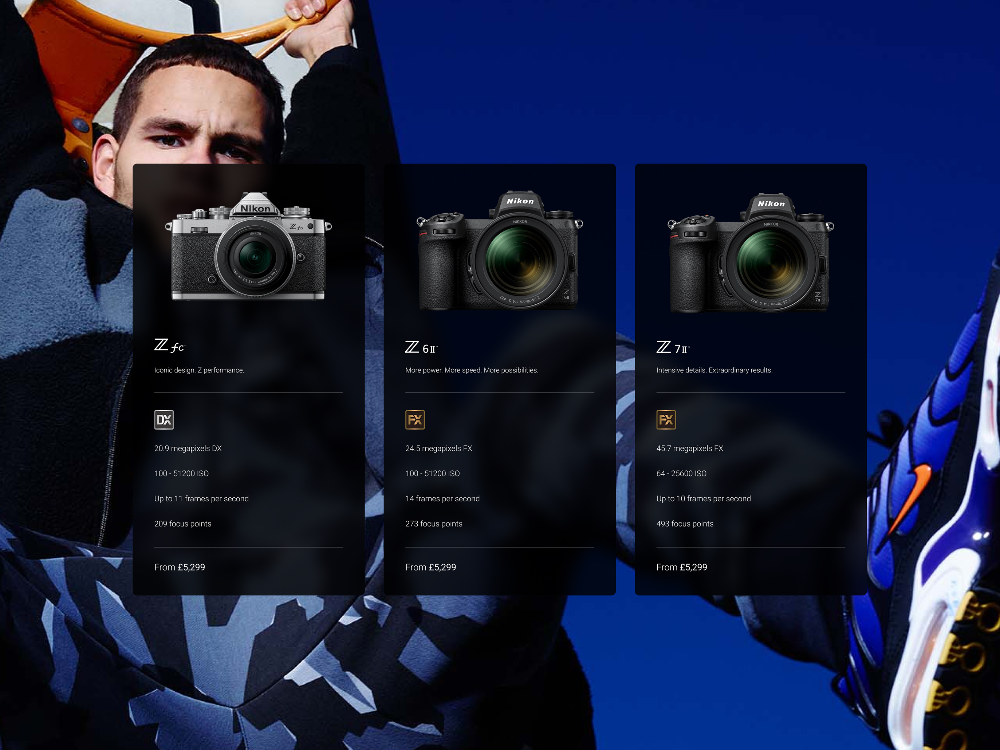
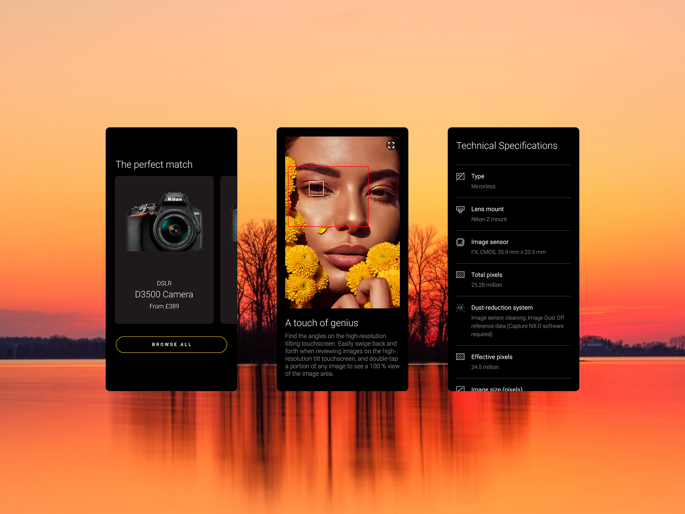
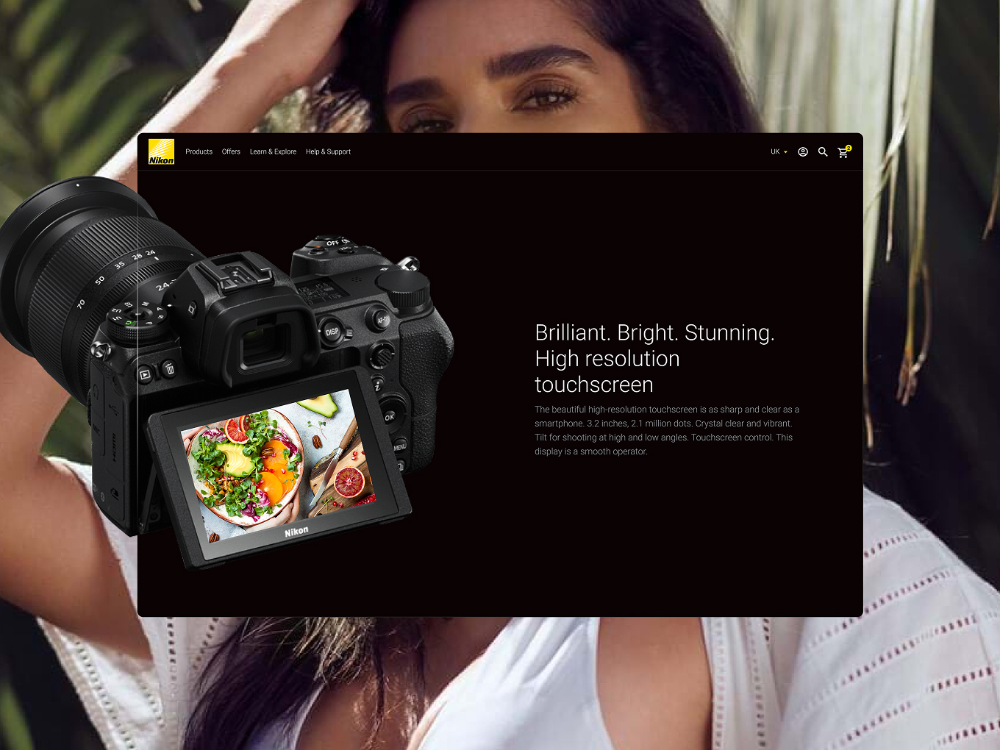
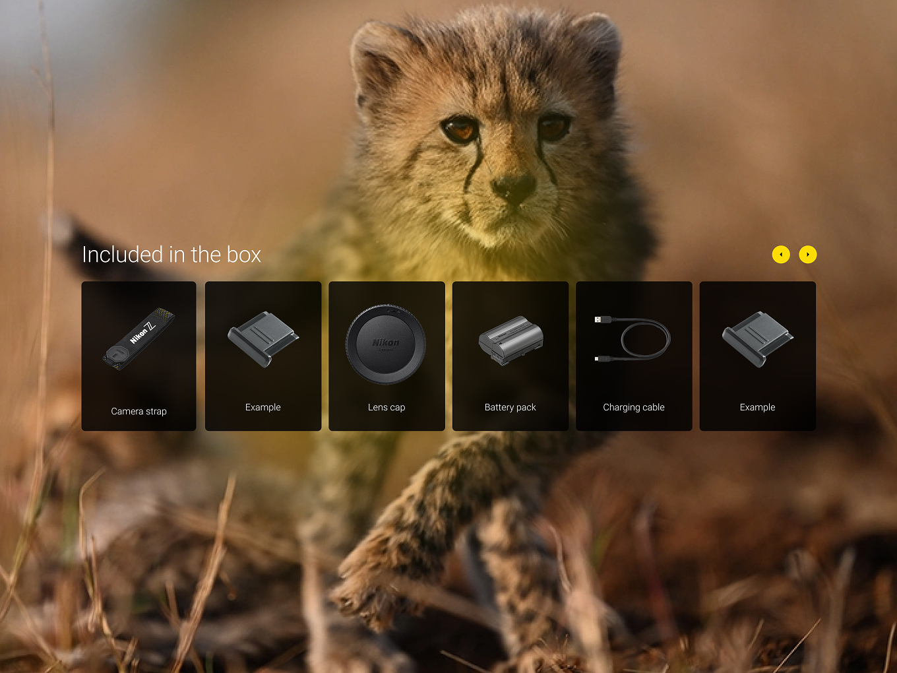
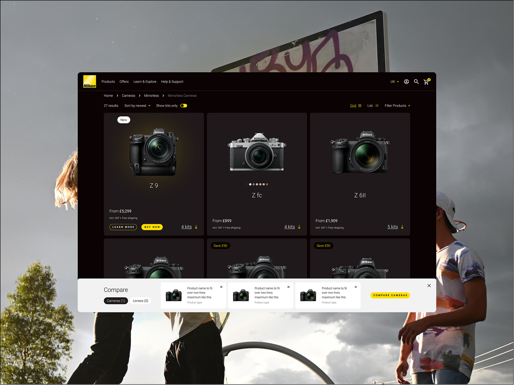

Nikon
36 Markets, One Design System
Nikon's European operation was running off 36 separate regional sites, each with its own journeys and inconsistent standards. As Head of Design I set the creative direction and led the consolidation into a single, unified commerce and content platform, working hands on across the key flows, pages and design system alongside the wider team. The result was a 36% lift in conversion rate and an ~18% increase in average order value.
Results
- +36% conversion rate
- +~18% average order value through checkout upselling
- 36 regional markets unified under one platform
- New B2B purchasing capability built alongside consumer journey
- One design system governing all markets

The Challenge
Nikon Europe's digital presence had grown market by market with no shared structure, so every region had its own version of the journey, its own inconsistencies, and almost no visibility across the business as a whole. Each market also had its own regional manager with their own priorities and opinions on how their site should work, so getting everyone aligned behind one shared platform was as much a stakeholder challenge as a design one.
The brand guidelines we had to work from were also badly out of date, which meant pushing for a more modern direction while still keeping things recognisably Nikon. On top of that, B2B was the core business driver behind the whole rebuild — so this wasn't just a redesign, it meant building genuinely new commerce capability into the front and back end from scratch. It was one of the largest projects in scope I worked on at DEPT®.


The Approach
Given the scale, I broke the project into four phases, each with its own sprints, so the team could tackle the workload without losing momentum or control: Phase 1 — core site rebuild and ecommerce foundations, Phase 2 — Schools section and Account, Phase 3 — checkout journey, Phase 4 — B2B portals and purchasing systems.
Getting 36 regional managers to align behind one shared structure meant the design system also had to work as a negotiation tool — a way to show each market what they'd gain from standardising, not just what they'd be giving up.
I set the early creative concepts and direction, then worked hands on with the team on the most complex flows, the design system and key pages, while overseeing the rest of the design output as Head of Design. The design system was treated as the backbone of the project rather than a side deliverable — it's what kept design and development aligned across a build of this size and let standardised journeys scale across 36 markets instead of being rebuilt market by market.
We worked closely with an internal data team throughout, using their insight to prioritise CRO opportunities on key pages. One of the clearest wins came in checkout, where introducing relevant accessory upsells lifted average order value by around 18%. We backed decisions like this with user testing and A/B testing rather than relying on instinct alone.

The Outcome
The 36 separate market sites became one unified, scalable commerce platform, with new B2B purchasing capability built in alongside the consumer journey — centralised governance cut operational overhead across all markets, and A/B testing plus user testing are now baked in as an ongoing CRO foundation.


Reflection
This is one of the clearest examples of how a design system pays for itself on a big enough project, and how pairing strong creative direction with real data and testing turns a consolidation project into something that keeps improving long after launch.

